DOODLEQUEST / A WORLD AS A GIFT
It started with a doodle.
An original drawing, a toy-like character, and a small adventure with a
personal ending. These are actual product screenshots. Pip is a
procedural example, not a Tripo-generated model.
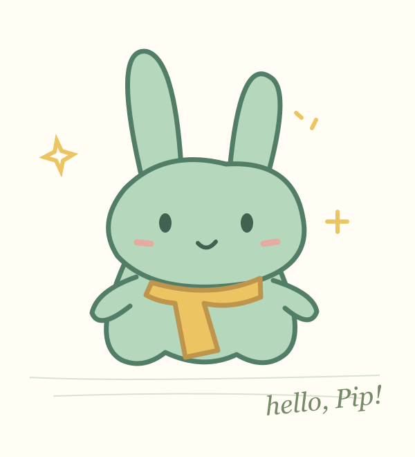
01 · The originalRepository-original mint bunny drawing. No
child's personal information.
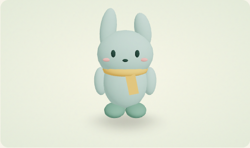
02 · A little personalityAuthored procedural hero, front view.
A clear example-mode label accompanies it in the product.
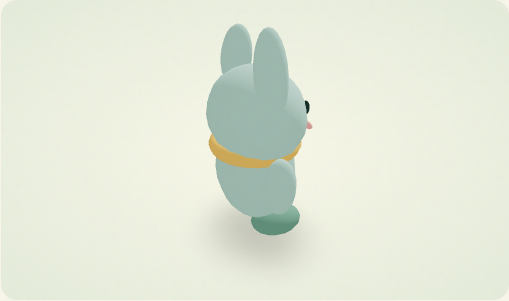
03 · Turn it aroundActual interactive model preview, rotated
during the walkthrough.
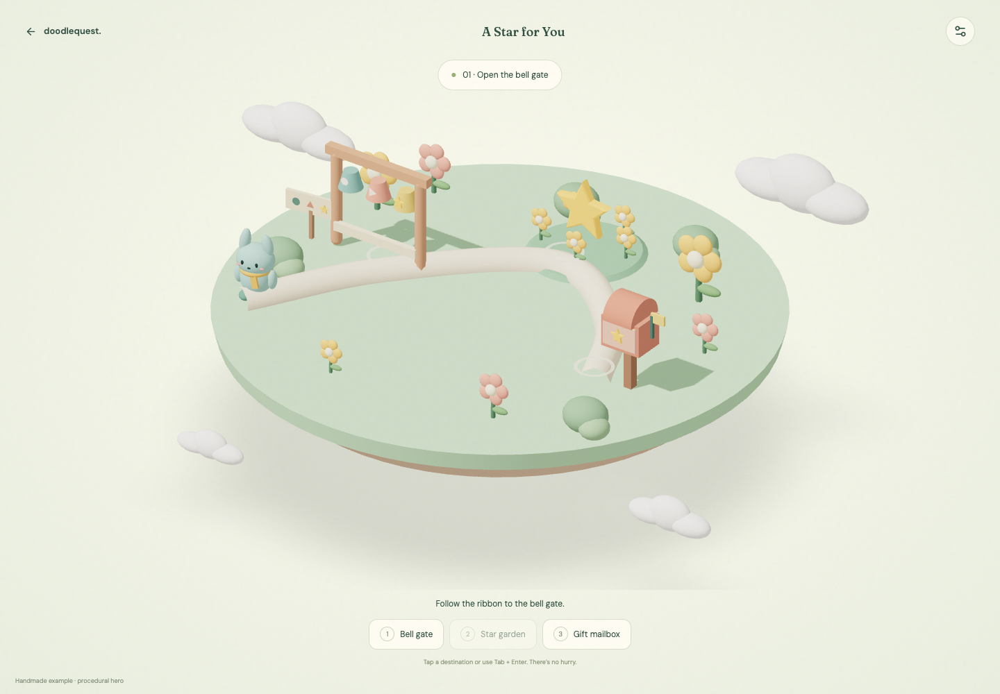
04 · Somewhere to belongOne floating island: bell gate, star
garden and gift mailbox.
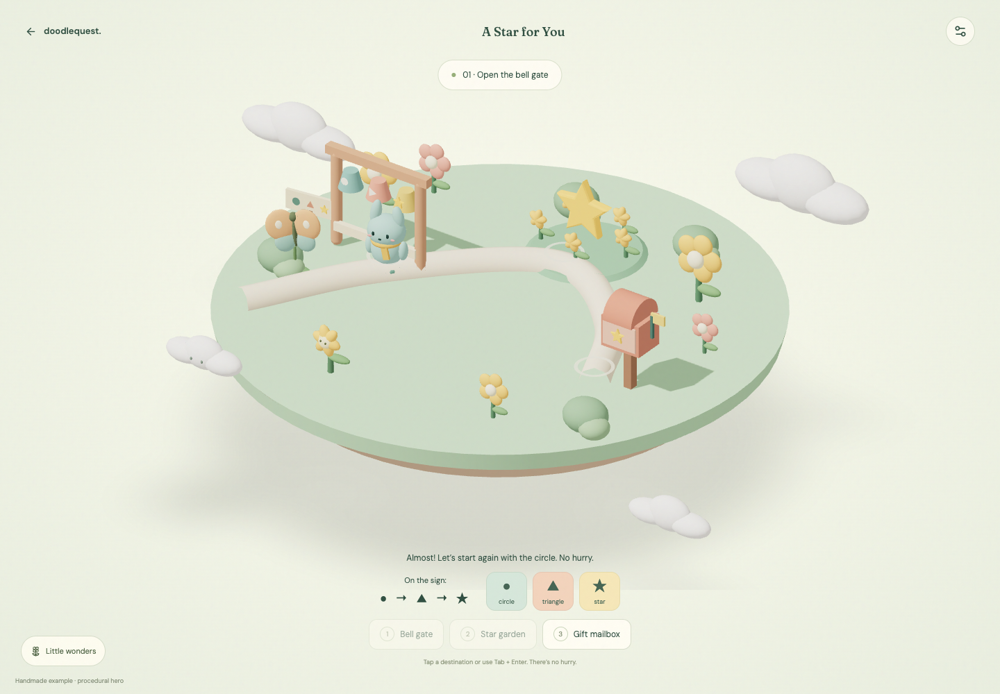
05 · A gentle beginningShapes as well as colors. The same
actions work with keyboard, touch or mouse.
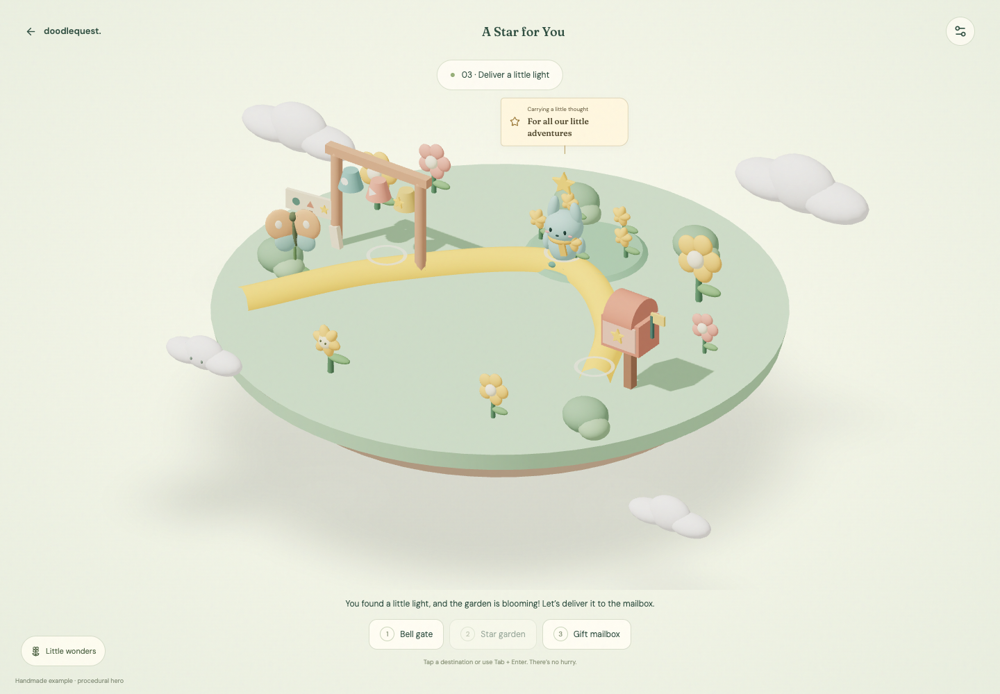
06 · Carry a little lightThe hero participates in the quest.
Authored rules protect the progression.
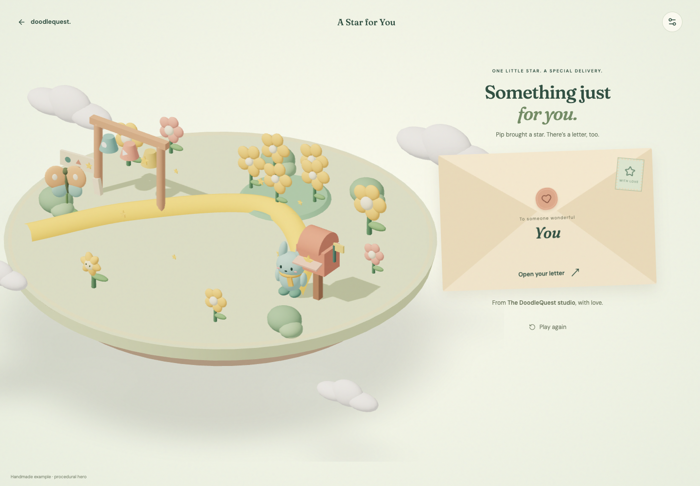
07 · Special deliveryA letter waits in a sealed envelope.
The recipient chooses when to open it.
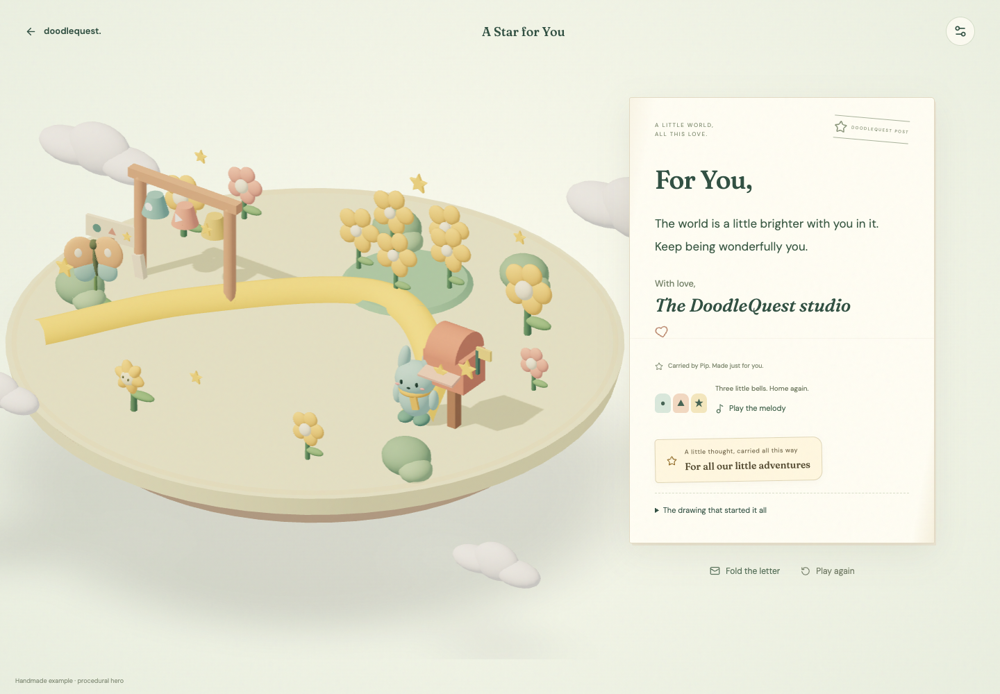
08 · A few words, just for youThe unchanged personal note, a warm signature and an optional drawing keepsake. Actual example-mode capture.
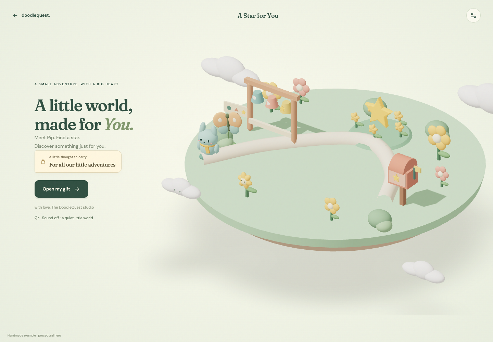
09 · Something only you would sayAn optional phrase, introduced before the adventure.
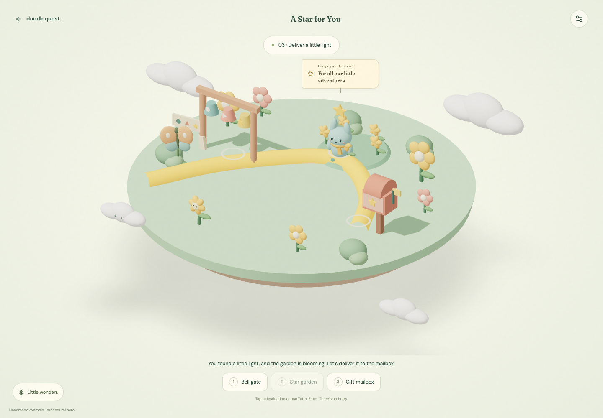
10 · Carry it with youThe tag follows the hero through the actual playable scene.
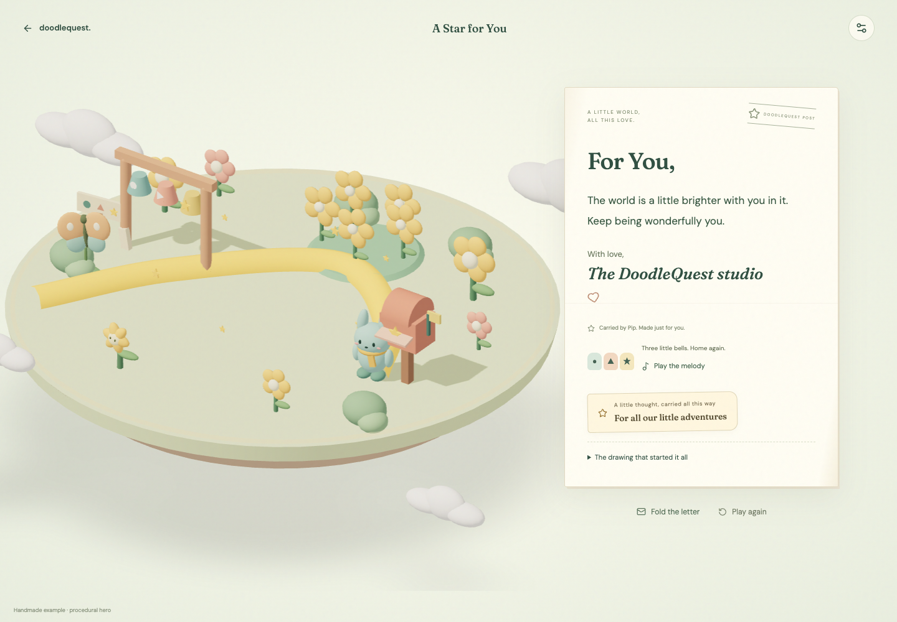
11 · All this way, just for youThe same words arrive with the note. No AI rewriting.
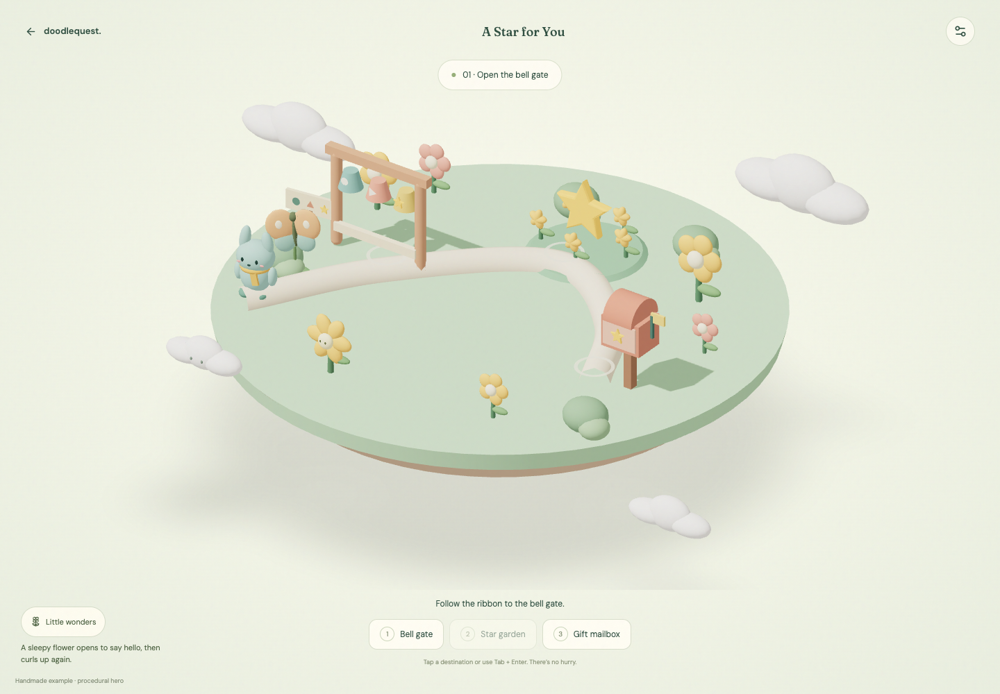
12 · A little helloA repeatable flower response, independent of the quest. Original procedural scenery.
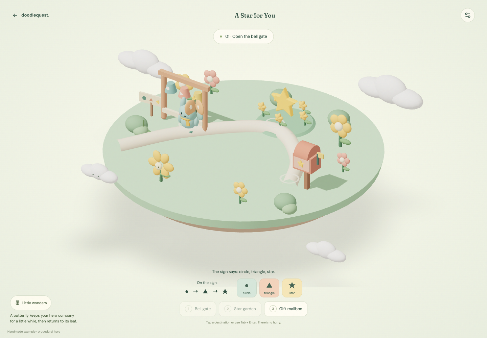
13 · Some company along the wayThe butterfly follows the hero's actual waypoint movement, then returns to its leaf.
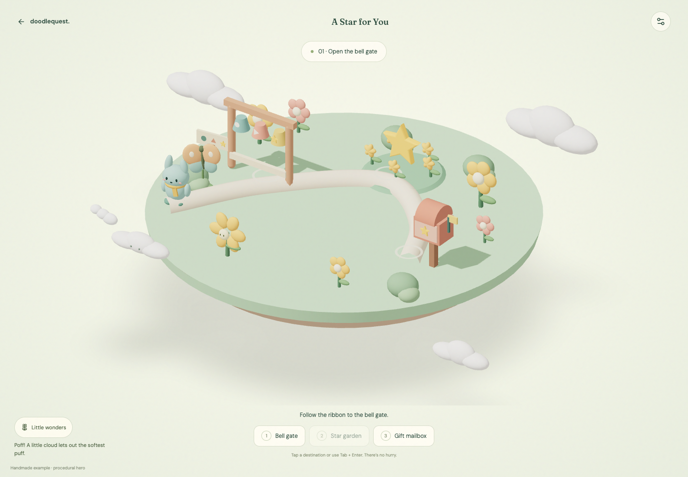
14 · The softest puffA tiny response, then quiet again. No collectible counter or quest requirement.
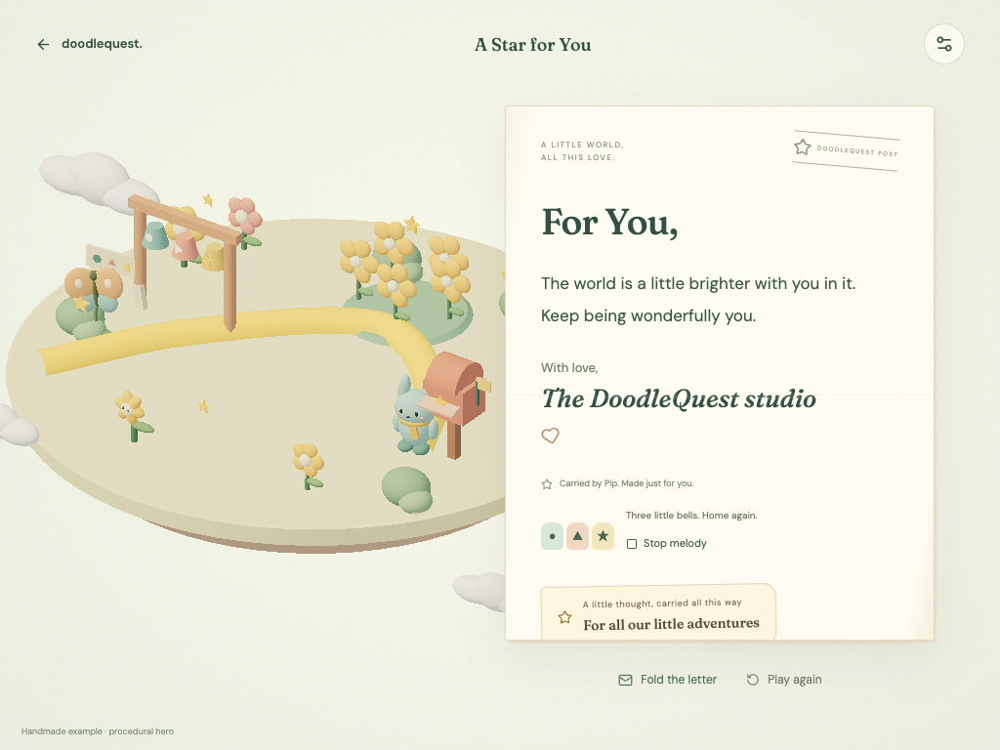
15 · A melody that comes homeThe bell notes return when the letter opens. Original locally synthesized score; sound is optional. This separate audio sample was captured from the actual browser audio graph, not a microphone. Physical speaker playback is unverified.
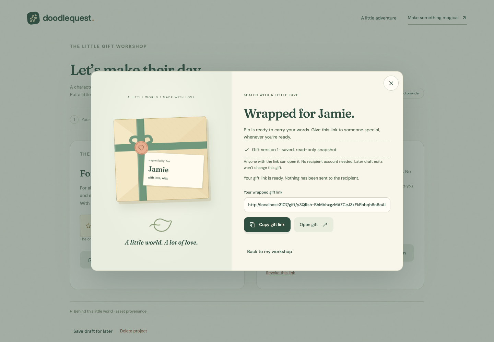
16 · Ready for someone specialReview the note, then seal the gift. The ribbon and heart seal follow a confirmed local publication, not simulated loading. Original CSS artwork; the sample hero remains procedural. No message is sent automatically.
Before tying the ribbon · Mobile wrapping